Back
Loan System
For Beauty Professionals at Urban Culture

Contents
Industry Type
On Demand Service
Tools
Adobe XD
For Platform
Mobile
Duration
29 Days
Industry Type
Urban Culture is more than just a home salon service;
it's a complex ecosystem that balances the needs of
customers, beauty professionals, and the business itself.
Operating in the competitive landscape of on-demand beauty
services in India, Urban Culture aims to bring
salon-quality care right to your doorstep through its web
and mobile platforms.
But here's the twist: Our beauty professionals, whom we call "partners," are not just service providers; they're stakeholders in our business model. Empowering them financially became a critical aspect of our strategy. This led to the inception of a comprehensive loan recovery system, designed to facilitate the purchase of essential beauty kits by our partners.
Given the high business goals associated with this project, I had the unique opportunity to work directly with our CEO, underscoring the project's critical nature.
This case study unfolds the intricate design decisions, the challenges, and the agile methodology that went into building this multi-faceted system.
But here's the twist: Our beauty professionals, whom we call "partners," are not just service providers; they're stakeholders in our business model. Empowering them financially became a critical aspect of our strategy. This led to the inception of a comprehensive loan recovery system, designed to facilitate the purchase of essential beauty kits by our partners.
Given the high business goals associated with this project, I had the unique opportunity to work directly with our CEO, underscoring the project's critical nature.
This case study unfolds the intricate design decisions, the challenges, and the agile methodology that went into building this multi-faceted system.
Project Preview
Unlocking the doors to financial freedom for our beauty
professionals with a comprehensive loan recovery system.
This system not only safeguards Urban Culture's
financial interests but also paves the way for our
partners to achieve their dreams.
Not interested in reading whole? No worries, I’ve got your
back.
Skip to Final Designs
The Challenge
Why the need for a System?
In an industry where trust is paramount, Urban Culture
found itself grappling with a loan recovery system that
was anything but transparent. Our beauty professionals,
the backbone of our service, were often left in the
dark, unsure of their loan status or the repayment
process. This lack of clarity led to a growing mistrust
and, alarmingly, a high number of defaulters.
🙁
Lack of transparency in loan status and repayments
🙁
Growing mistrust among beauty professionals
🙁
Alarmingly high number of defaulters
The Old Guard: A Manual System
The existing loan recovery process was archaic, to say
the least. Admins manually maintained loan records, and
communication with our partners was limited to a monthly
call for EMI payments. This manual approach was not only
time-consuming but also prone to errors, further fueling
mistrust among our beauty professionals.
🫣
Limited communication: Monthly calls for EMI
payments
🫣
Loan records manually maintained by admins
🫣
Time-consuming and prone to errors
The Domino Effect: A Cycle of Loss
The repercussions were severe. The company faced
potential financial losses and had difficulty tracking
budgets for partner onboarding. This lack of financial
clarity made it challenging to scale the business or
even maintain existing operations efficiently.
😣
Challenges in scaling the business and maintaining
operations
😣
Difficulty in tracking budgets for partner
onboarding
😣
Potential financial losses for the company
The Starting Point
The Domino Effect: A Cycle of Loss
The repercussions were severe. The company faced potential
financial losses and had difficulty tracking budgets for
partner onboarding. This lack of financial clarity made it
challenging to scale the business or even maintain
existing operations efficiently.
My Role: The Orchestrator of Change
As the Sole Designer on this project, my responsibilities were both broad and deep, spanning
from initial research to final design deliverables. I
collaborated closely with a cross-functional team that
included a Flutter Developer, CEO, and Backend Developer.
Responsibilities
User Research:
Conducted interviews, identified pain points, and
established user personas.
Wireframing & Prototyping:
Created the initial wireframes and iterated based
on feedback.
UI/UX Design:
Developed the final user interfaces, focusing on
ease of use and aesthetic appeal.
Collaboration:
Worked hand-in-hand with the development team to
ensure design fidelity and resolve implementation
challenges.
Key Contributions:
Strategic Planning:
Played a pivotal role in identifying the need for
a loan recovery system during a crucial business
meeting.
Innovation:
Introduced game-changing ideas that were later
incorporated into the final design.
Problem-Solving:
Addressed key challenges such as lack of
transparency and high default rates through design
solutions.
The Users
Our Partners: The Beauty Professionals
After aligning on business objectives in our initial
meetings, the spotlight shifted to the heart of our
service - the Beauty Professionals. Recognising their
pivotal role in Urban Culture's success, it was
essential to delve deep into their experiences, needs, and
challenges.
Research Goals:
🎯
To identify the needs and preferences of both admins
and beauty professionals.
🎯
Gauge the level of trust & satisfaction with Urban
Culture's financial dealings.
🎯
To understand the existing loan recovery process and
its pain points.
🎯
To evaluate the effectiveness of competitor systems.
Research Goals:
Before embarking on the design journey,
it was crucial to understand the nuances of the problem
from the perspectives of both admins and beauty
professionals.
Interviews were conducted to gather qualitative
insights.
○ Conducted interviews with a diverse group of beauty professionals to gather firsthand insights.
○ Explored their experiences with the loan process, repayments, and overall relationship with Urban Culture.
○ Conducted interviews with a diverse group of beauty professionals to gather firsthand insights.
○ Explored their experiences with the loan process, repayments, and overall relationship with Urban Culture.
😵
"The biggest challenge is keeping track of
all the loans and their respective recovery
methods."
😵
"There's a lack of transparency, which
makes professionals uneasy at times."
Operation Manager
🥺
"It's a bit confusing. I'm never
sure how much I've paid back or how much is
left."
🥺
"I get calls, but they're not always
clear and are sometimes not trustworthy."
Beauty Professionals
User Pain Points:
🔴
Lack of transparency in the loan recovery process.
🔴
Mistrust due to inconsistent communication from the
company.
🔴
Challenges in managing bookings and understanding
earnings deductions.
Competitor Analysis
Market Positioning: Standing Out in the Crowd
In the realm of home salon services, Urban Culture, while
a budding name, competes directly with giants like Urban
Company. To ensure our solution was both innovative and
user-centric, a thorough analysis of their Loan Recovery
system was undertaken.
Urban Company's Approach:
🧐
Simplicity with Shortcomings:
While Urban Company's system was straightforward, it lacked depth and detailed explanations, leaving partners with potential questions and concerns.
While Urban Company's system was straightforward, it lacked depth and detailed explanations, leaving partners with potential questions and concerns.
😵
Terminology Troubles:
A glaring issue was the use of the term "Recovery" in the context of partners. Phrases like "Recovery pending" were not only confusing but also seemed to be from the company's perspective rather than the partners'. This could lead to feelings of unease or mistrust among partners.
A glaring issue was the use of the term "Recovery" in the context of partners. Phrases like "Recovery pending" were not only confusing but also seemed to be from the company's perspective rather than the partners'. This could lead to feelings of unease or mistrust among partners.
Our Differentiation:
❤️
User-Centric Terminology:
I recognised the importance of language in UX. Instead of using terms that might alienate our partners, I opted for more inclusive and clear language that resonated with their perspective.
I recognised the importance of language in UX. Instead of using terms that might alienate our partners, I opted for more inclusive and clear language that resonated with their perspective.
✅
Depth with Clarity:
Our system aimed to provide comprehensive information without overwhelming the user, ensuring they felt informed and empowered throughout the loan process.
Our system aimed to provide comprehensive information without overwhelming the user, ensuring they felt informed and empowered throughout the loan process.
With a comprehensive understanding of our users and a clear
picture of the market landscape, the stage was set. It was
time to channel all my insights into creative ideation and
bring our vision to life.
Wireframes
Evolution of Design: Main Screen Variations
3 variations were made for the Home screen.
Variation 1
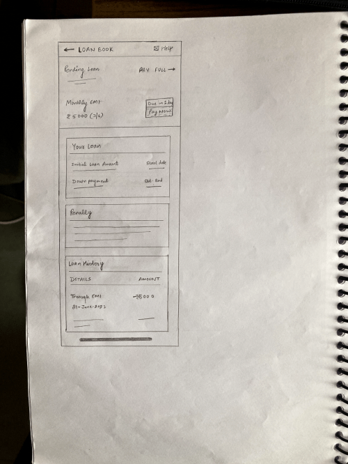
Pros
○
Main focus was on the Pending Loan
○
Clear and concise layout.
○
Easy navigation.
Cons
○
Lack of detailed information on loan status.
○
Two CTA’s creating confusion, if it is necessary
to pay full amount?
Variation 2
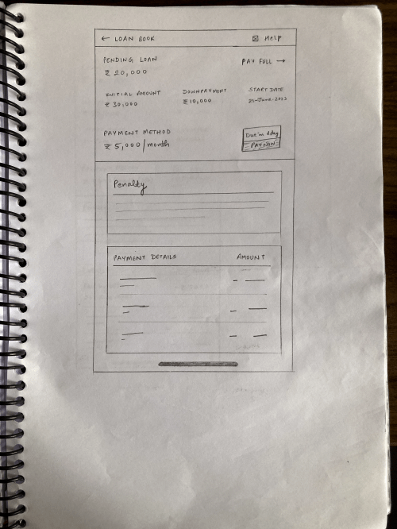
Pros
○
Main focus was still on the Pending Loan
○
More detailed information on loan repayments.
Cons
○
The layout was a bit cluttered, potentially
overwhelming for the partners.
○
Two CTA’s creating confusion, if it is necessary
to pay full amount?
Final variation: Variation 3
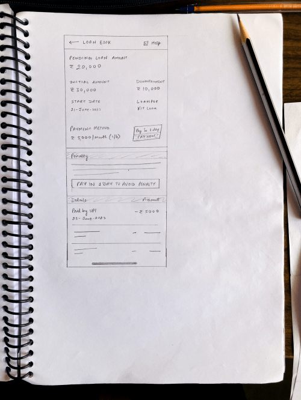
Pros
○
Main focus was still on the Pending Loan
○
Clean and user-friendly layout.
○
Detailed yet concise information on loan status
and repayments.
○
Just one CTA, to pay current EMI. Reduces
confusion of the partners
Why This Was the Chosen Design:
○
This final variation addressed the issues found in
the previous designs, providing a balance between
detailed information and a user-friendly
experience.
No Payment Due Screen
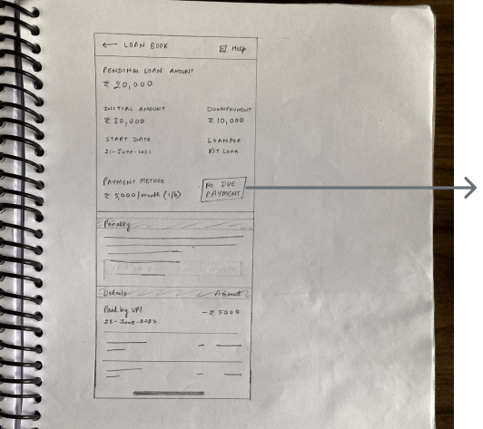
Clear Status Indicator:
A prominent display showing that there are no payments
due, ensuring immediate understanding of the current
status.
Wireframe for Penalty Scenarios
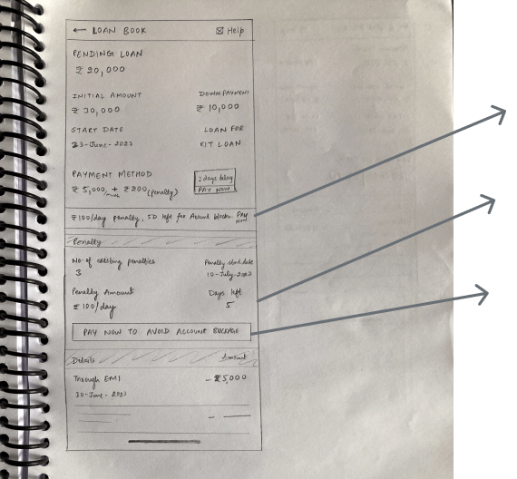
Key Features
○
Clear Penalty Notification: A distinct and
straightforward notification that a penalty has
been imposed, ensuring the user is immediately
aware of the situation.
○
Detailed Explanation: Providing a clear and
concise explanation of why the penalty was
imposed, helping to educate the user and prevent
future occurrences.
○
Actionable Steps for Resolution: Clear guidance on
how to resolve the penalty.
Wireframe for Penalty Scenarios
Different beauty professionals prefer different
methods of repaying their loans. One such method is
through the deduction of credits at the time of
booking served. Below is the wireframe designed to
accommodate this repayment method:
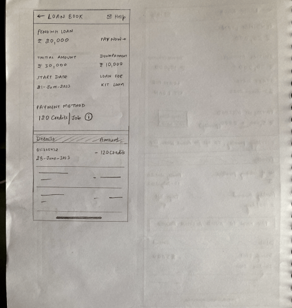
Key Features
○
Detailed Transaction History:
A comprehensive list of all the bookings served,
along with the corresponding credit deductions,
ensuring transparency.
○
Helpful Tip: Tip
and information on how credit deductions work,
aiding in user education and preventing any
potential confusion.
Design Rationale:
○
User Education:
Including helpful tip and information educates the
users on the credit deduction process, ensuring
they are fully aware of how their repayments are
being handled. Also giving them supportive text
helps to make connection with them that ‘we got
their back’.
The Payment Page
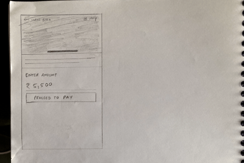
Clear, Simple and Concise.🙂
With a tight deadline of just 30 days for project
completion, efficiency was paramount. Instead of a
traditional approach, I transitioned directly
from sketches to working prototypes.
This allowed for rapid feedback from stakeholders, ensuring
that we stayed on track and aligned with the project's
objectives.
After presenting the initial
prototypes and gathering feedback from stakeholders,
I was met with resistance. The designs, while innovative,
were not what the CEO had envisioned.
The Conflict
Balancing Familiarity with Innovation
The CEO's perspective was rooted in familiarity.
He wanted a design that mirrored Urban Company's,
especially in terms of UX writing, emphasizing the term
"Recovery".
His rationale? A significant portion of our beauty
professionals previously worked with Urban Company. Given
that many of them are uneducated and come from
underprivileged backgrounds, he believed that introducing
a different design pattern and terminology might lead to
confusion. In his view, consistency with what they were
accustomed to would minimize potential issues.
"We have to consider where most of our
professionals are coming from. They're used to a
certain system with Urban Company. If we change things
too much, we risk alienating them. We need to strike a
balance."
CEO, Urban Culture
Solution
Finding Common Ground: The Solution
Navigating the waters between user-centric design and
stakeholder expectations was quite challenging for me.
However,
it was essential to find a solution that would cater to
our beauty professionals' familiarity while also
introducing innovative features to improve their
experience.
Intuitive Design with Familiar Patterns:
To ensure ease of use, the design incorporated familiar
patterns from Urban Company's system.
However, subtle enhancements were introduced:
🤩
Clear visual indicators for loan status.
🤩
Detailed breakdowns of repayments, ensuring
transparency.
Bridging the Gap with Terminology:
While the term "Recovery" was familiar to our
professionals, it was crucial to ensure it didn't
come across as intimidating or negative.
I proposed an idea of using "Hinglish" for
the app's language.
Benefits of Hinglish:
Familiarity:
It's a language they use daily, making it
instantly recognisable and relatable.
Ease of Use:
Given its prevalence in texting and messaging
apps, it ensures a seamless user experience.
Challenges:
Familiarity:
Introducing a language change option for the
entire app would be time-consuming.
However, recognizing the immense value this change would
bring, the stakeholders were on board. To expedite the
process, an intern was hired specifically to implement
this language change option, ensuring a quick turnaround.
Transformative Approach
Game-changing Idea: Rewarding Financial Responsibility
While thinking about how to make everyone happy,
I got a simple idea. What if we give stars to our beauty professionals when they pay back their loans on time?
Traditionally, partner ratings were influenced by factors like customer feedback and punctuality. However, I proposed why not add another way to earn stars?
I got a simple idea. What if we give stars to our beauty professionals when they pay back their loans on time?
Traditionally, partner ratings were influenced by factors like customer feedback and punctuality. However, I proposed why not add another way to earn stars?
The Dual Benefits:
✅
Incentivising Timely Repayments:
Partners would be motivated to clear their dues promptly, avoiding penalties. A better loan repayment record would boost their ratings, leading to more bookings.
Partners would be motivated to clear their dues promptly, avoiding penalties. A better loan repayment record would boost their ratings, leading to more bookings.
🥳
Identifying Trusted Partners:
For the company, this mechanism would serve as a trust barometer. Partners with consistent loan repayment behaviour would be deemed more reliable, and in turn, would be prioritised with more leads.
For the company, this mechanism would serve as a trust barometer. Partners with consistent loan repayment behaviour would be deemed more reliable, and in turn, would be prioritised with more leads.
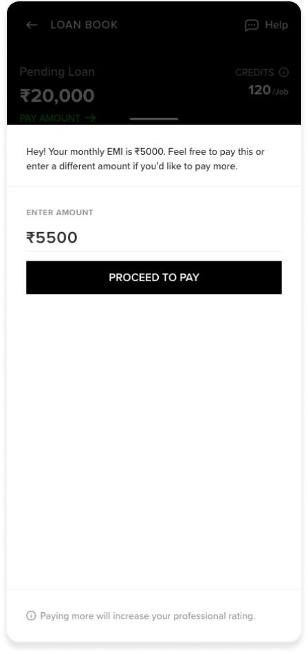
Subtly yet clearly giving them clue if they want to
pay more.
"This idea is brilliant! It's a testament
to thinking outside the box. It's simple yet so
effective, with this we're not just improving
our loan recovery process but also fostering a
culture of trust and responsibility. Kudos to you
for bringing this to the table."
CEO, Urban Culture
Final Designs
Final Designs: Bringing Vision to Life
After navigating through challenges, reconciling
stakeholder expectations, and infusing innovative ideas,
the final designs for the loan recovery system were ready.
These designs not only addressed the initial problems but also introduced features that would enhance the overall experience for our beauty professionals.
These designs not only addressed the initial problems but also introduced features that would enhance the overall experience for our beauty professionals.
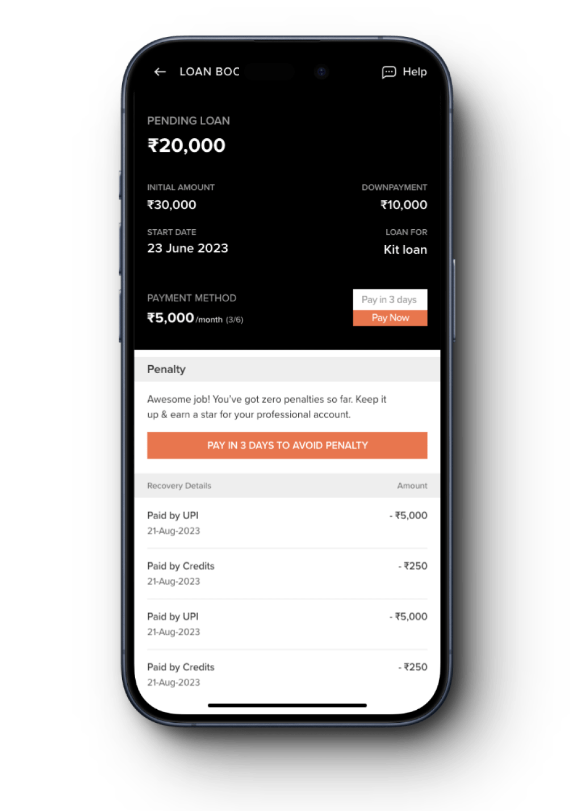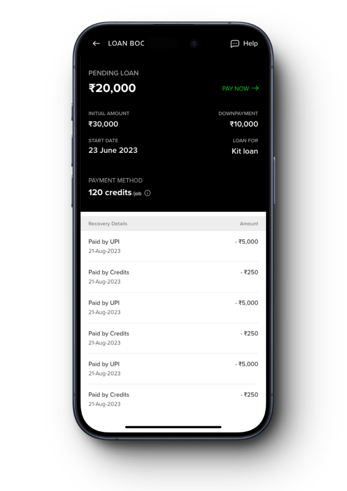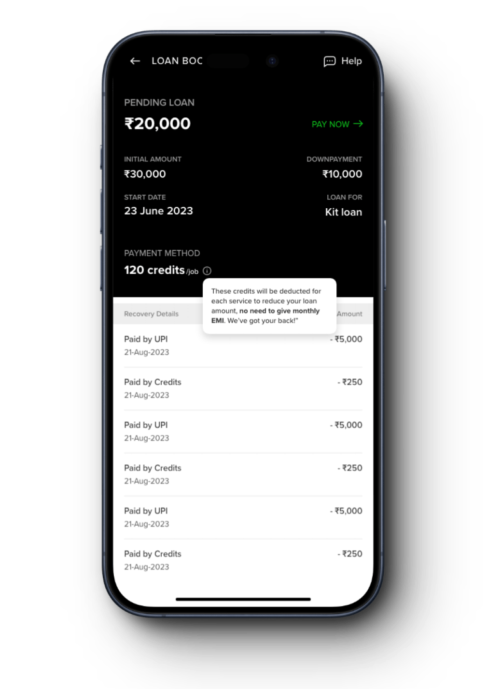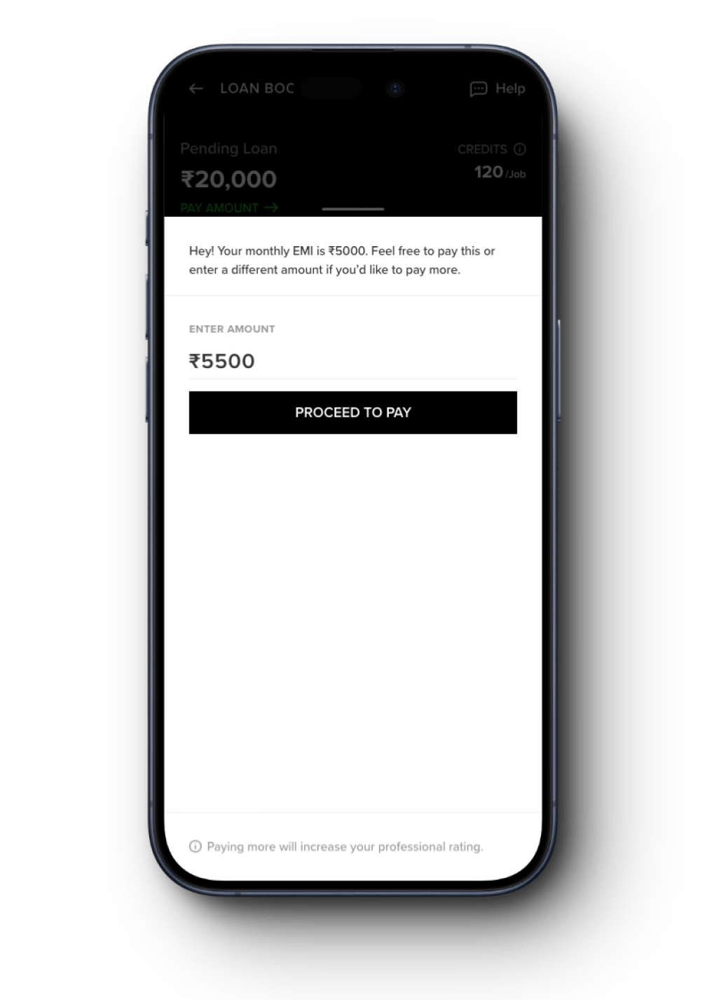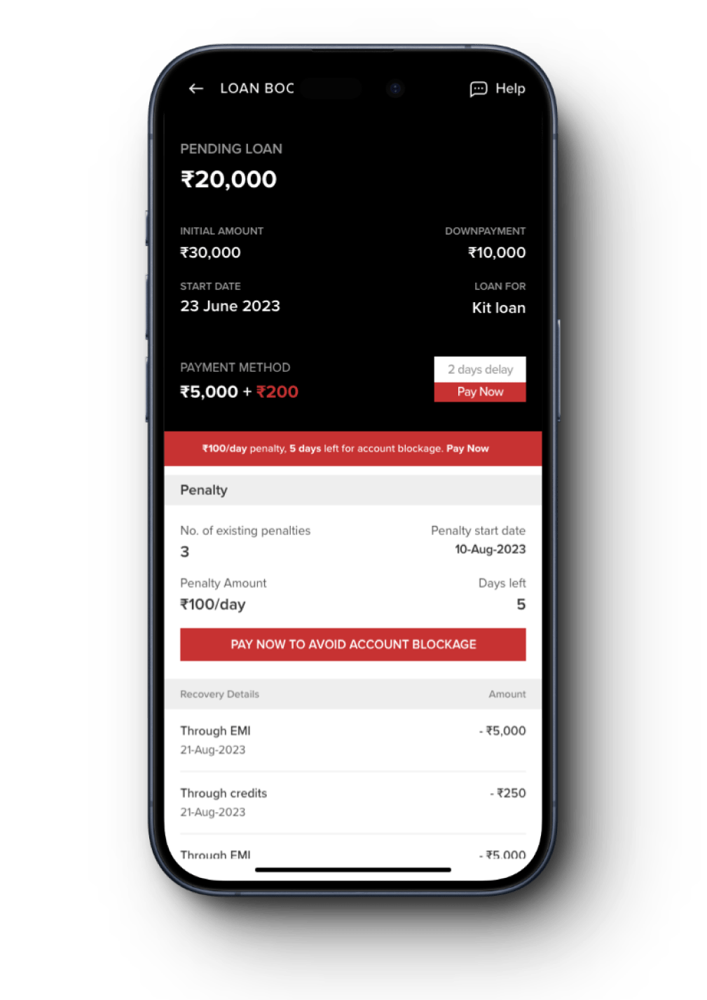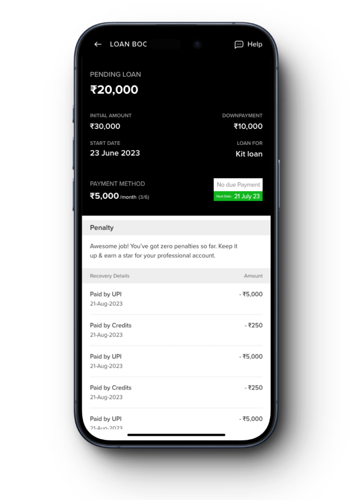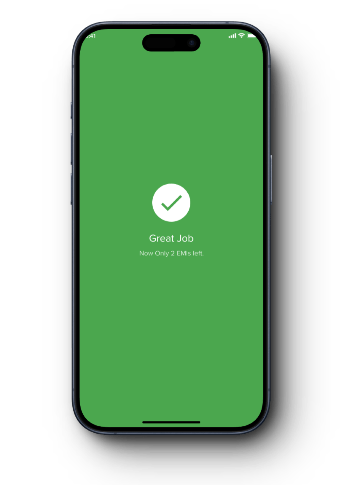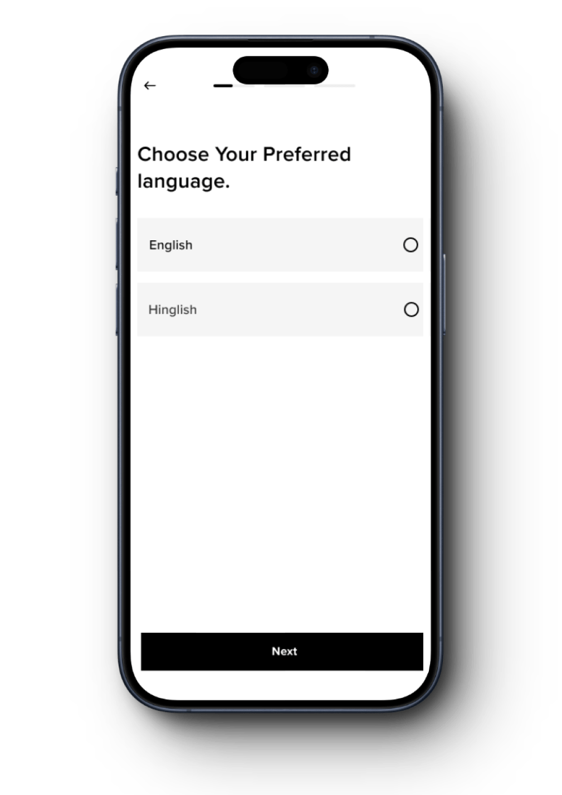
Reflections
A Journey of Growth
Every project is a learning experience, and the journey
with Urban Culture was no exception. As I look back, there
are several takeaways, both in terms of successes and
areas of improvement.
What went well:
1
Collaborative Approach:
Working closely with the CEO and other team
members ensured that we were aligned in our goals
and vision. This collaborative spirit was
instrumental in navigating challenges and arriving
at effective solutions.
2
User-Centric Focus:
Prioritising the needs and preferences of our
beauty professionals led to designs that were
intuitive and resonated with the user base.
3
Innovative Solutions:
The introduction of the "Hinglish"
language option and the integration of loan
repayment behaviour into the rating system were
game-changers, setting Urban Culture apart from
competitors.
Areas of Improvement:
1
Stakeholder Communication:
While the collaboration was strong, there were
moments of misalignment, especially in the initial
stages. A more structured communication plan could
have streamlined the feedback process.
2
Time Management:
The project had a tight timeline. While we managed
to deliver on time, a more extended ideation phase
could have led to exploring additional innovative
solutions.
3
User Testing:
While feedback from a select group of beauty
professionals was invaluable, broader user testing
could have provided more diverse insights.
Key Learnings:
1
Flexibility is Key:
In design, it's essential to be adaptable.
Balancing stakeholder expectations with user needs
required a flexible approach and a willingness to
iterate.
2
The Power of Language:
The decision to incorporate "Hinglish"
highlighted the significance of cultural and
linguistic nuances in design.
3
Trust the Process:
Challenges and conflicts are part and parcel of
any project. Trusting the design process and
believing in the power of collaboration and
innovation can lead to remarkable outcomes.